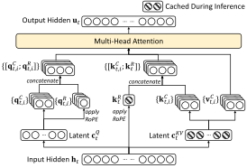
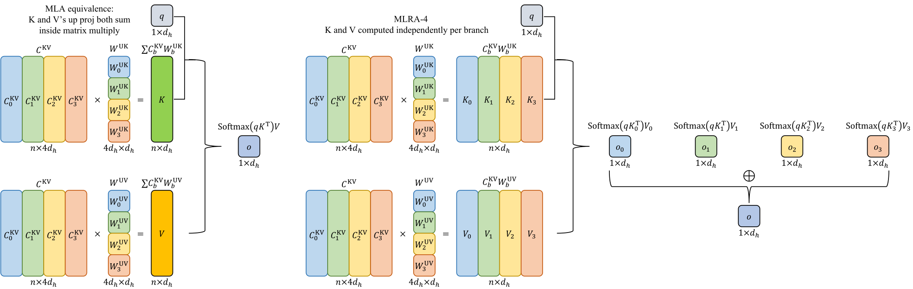
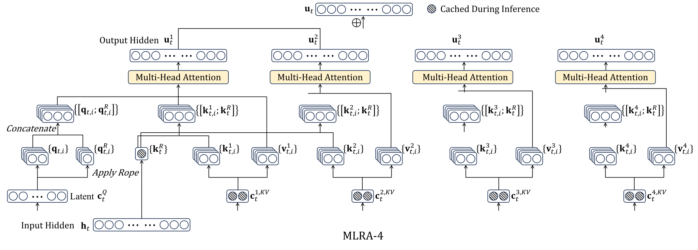
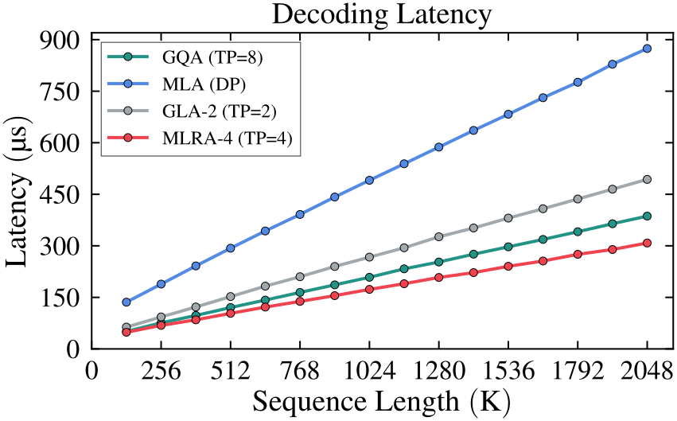
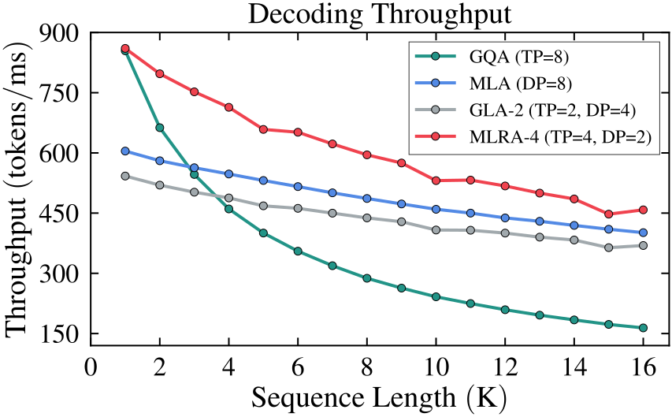

Multi-Head Low-Rank Attention
Code: https://github.com/SongtaoLiu0823/MLRA
Data & Weights: https://huggingface.co/Soughing/MLRA
1. Introduction
1.1 The KV Cache Bottleneck
As LLMs are increasingly deployed for long-context tasks—retrieval-augmented generation (RAG), multi-hop chain-of-thought reasoning, and extended dialogues—the number of tokens that must be processed at each decoding step grows substantially. The fundamental problem is that autoregressive generation is memory-bound, not compute-bound. At every decoding step, the model must reload the entire Key-Value (KV) cache from off-chip memory1 to on-chip memory2, and this data movement dominates latency, leading to poor GPU utilization.
Under standard Multi-Head Attention (MHA)3, the KV cache size scales with the number of heads, the head dimension, and the sequence length—quickly becoming a severe bottleneck at context lengths exceeding 100K tokens.
1.2 Existing Approaches
Several methods have tried to reduce the KV cache. Grouped Query Attention (GQA)4 shares keys and values across groups of query heads, reducing the cache proportionally. Multi-Query Attention (MQA)5 takes this to the extreme—a single KV pair shared by all heads—but can hurt model quality. More recently, Multi-Head Latent Attention (MLA)6, introduced in DeepSeek-V2, compresses the entire KV cache into a low-dimensional latent head, achieving remarkable cache savings while maintaining model quality.
However, as we explain in the next section, MLA's design introduces a critical limitation when deployed with tensor parallelism (TP)—the standard strategy for multi-device inference.
2. Multi-Head Latent Attention (MLA) and Its TP Problem

2.1 How MLA Works
Given a sequence of $n$ tokens with hidden states $\bm{H} \in \mathbb{R}^{n \times d}$, MLA first compresses them into a low-dimensional latent head and a partial RoPE key via learned down-projection matrices:
- A KV latent $\bm{C}^{\text{KV}} = \operatorname{RMSNorm}\left(\bm{H}\bm{W}^{\text{DKV}}\right)$, with dimension $d_c = 4d_h$
- A partial RoPE7 key $\bm{K}^{\text{RoPE}} = \operatorname{RoPE}\left(\bm{H}\bm{W}^{\text{KR}}\right)$, with dimension $d_h^R = 0.5d_h$
Only $\bm{C}^{\text{KV}}$ $\left(4d_h\right)$ and $\bm{K}^{\text{RoPE}}$ $\left(0.5d_h^R\right)$ are cached during inference, for a total of $4.5d_h^R$ per token—dramatically smaller than MHA's $2hd_h^R$ per token. The full keys and values for all $h$ heads are computed from the single latent $\bm{C}^{\text{KV}}$ via up-projection matrices $\bm{W}^{\text{UK}}$ and $\bm{W}^{\text{UV}}$.
2.2 Efficient Decoding via Weight Absorption
MLA's efficient decoding proceeds in three steps, exploiting the associativity of matrix multiplication to avoid materializing the $h$ heads of NoPE keys and values entirely.
Step 1 — Query-Side Weight Absorption. For each head $i$, the up-projection matrix $\bm{W}_{:,(i)}^{\text{UK}}$ is absorbed directly into the NoPE query: $$\tilde{\tens{Q}}_{n-1,i,:}^{\text{NoPE}} = \tens{Q}_{n-1,i,:}^{\text{NoPE}}\left(\bm{W}_{:,(i)}^{\text{UK}}\right)^\top \in \mathbb{R}^{d_c}$$ The query now lives in the $d_c$-dimensional latent space rather than the $d_h$-dimensional head space.
Step 2 — MQA-Style Attention over the Latent Cache. The absorbed query $\tilde{\tens{Q}}_{n-1,i,:} = \left[\tilde{\tens{Q}}_{n-1,i,:}^{\text{NoPE}}; \, \tens{Q}_{n-1,i,:}^{\text{RoPE}}\right]$ attends directly over the cached $\bm{C}^{\text{KV}}$ and $\bm{K}^{\text{RoPE}}$, without expanding to full keys and values: $$\tens{Z}_{n-1,:,:} = \operatorname{Attention}\left(\tilde{\tens{Q}}_{n-1,:,:}, \, \operatorname{RepeatInterleave}\left(\left[\bm{C}^{\text{KV}}; \, \bm{K}^{\text{RoPE}}\right], h\right), \, \operatorname{RepeatInterleave}\left(\bm{C}^{\text{KV}}, \, h\right)\right)$$ This MQA-style operation is directly supported by optimized kernels: FlashAttention-38 and FlashMLA9 are specifically designed to implement this latent-space attention computation efficiently.
Step 3 — Output Up-Projection. Finally, the intermediate output $\tens{Z}_{n-1,:,:} \in \mathbb{R}^{h \times d_c}$ is projected back to the head dimension via $\tilde{\bm{W}}^{\text{UV}}$: $$\tens{O}_{n-1,:,:} = \operatorname{einsum}(\texttt{"hc,hcp->hp"}, \, \tens{Z}_{n-1, :, :}, \, \tilde{\bm{W}}^{\text{UV}}) \in \mathbb{R}^{h \times d_h}$$
2.3 Why MLA Fails Under Tensor Parallelism
Tensor parallelism (TP) is the standard approach for multi-device inference: attention heads are split across devices, with each device handling a subset of heads. Under TP with $\varphi$ devices, GQA can reduce per-device KV cache loading to as low as $2gd_h/\varphi$ by evenly partitioning its $g$ KV heads across $\varphi$ devices.
MLA has only one latent head—it is indivisible. The official FlashMLA implementation handles TP by distributing the up-projection matrices across devices by head, but this requires repeatedly loading the full KV cache on every device. The result:
Problem: Under any degree of TP, MLA's per-device KV cache loading remains $4.5d_h$—never shrinking. For context: GQA with 8-way TP achieves $2d_h$ per device, which is less than half of MLA's cost. MLA decodes slower than GQA on sufficiently many devices despite having a smaller total cache.
| Method | Total KV Cache Loading | TP=1 | TP=2 | TP=4 | TP=8 |
|---|---|---|---|---|---|
| GQA | $16d_h$ | $16d_h$ | $8d_h$ | $4d_h$ | $2d_h$ |
| MLA | $4.5d_h$ | $4.5d_h$ | $4.5d_h$ | $4.5d_h$ | $4.5d_h$ |
| MLRA (ours) | $4.5d_h$ | $4.5d_h$ | $2.5d_h$ | $1.5d_h$ | $1.5d_h$ |
Per-device KV cache loading under varying TP degrees. GQA is configured with 64 query heads and 8 KV heads; all other methods follow their standard configurations. MLRA achieves the lowest per-device footprint at TP $\geq$ 4.
3. Our Method: Multi-Head Low-Rank Attention (MLRA)

3.1 The Block Decomposition Insight
The key observation that motivates MLRA is a simple algebraic identity. MLA's KV latent $\bm{C}^{\text{KV}}$ has dimension $4d_h$, so it can naturally be partitioned into four equal blocks $\bm{C}_{:,(0)}^{\text{KV}}$ through $\bm{C}_{:,(3)}^{\text{KV}}$ . Correspondingly, the up-projection matrix $\bm{W}_{:,(i)}^{\text{UK}}$ for head $i$ can be expressed as a vertical stack of four $d_h\times d_h$ row-blocks.
This means the NoPE key and value computations for head $i$ can be rewritten as a sum of four block products:
This is mathematically equivalent to what MLA computes. The question is:
Can we rearrange the summation to enable parallelism?
3.2 MLRA-4: Moving the Sum Outside Attention
MLRA-4 takes the block decomposition and moves the summation from inside the key/value computation to outside attention. Rather than computing a single attention over a combined key, we compute four independent attention branches—one per latent block—and sum their outputs:
Each branch operates on a single latent block of dimension $d_h$, and the four branches are independent—perfectly suited for 4-way TP. Each device handles one block, caching only $d_h+0.5d_h=1.5d_h$ per token.

4. Experiments and Results
We compare MLRA against a comprehensive set of baselines—MHA, MQA, GQA, MLA, MFA10, TPA11, GLA-2, GLA-4, and GTA12—all trained from scratch at the 2.9B parameter scale on 98.3B tokens from FineWeb-Edu using the Llama-3 architecture. To ensure fair comparison, all models are parameter-matched by adjusting the FFN intermediate dimension.
4.1 Validation Perplexity
We evaluate perplexity on 7 datasets: Wikipedia, C4, Pile, RefinedWeb, Cosmopedia, FineWeb, and FineWeb-Edu. The key findings:
- MLRA-4 achieves the best average perplexity (13.672) across all seven datasets, outperforming all baselines including MLA (13.727).
- MLRA-4 ranks first on six out of seven datasets (Wikipedia, C4, RefinedWeb, Cosmopedia, FineWeb, and FineWeb-Edu).
- MLRA-4 consistently outperforms MLRA-2 across all datasets, demonstrating that more branches are beneficial.
This result is notable: MLRA-4 reduces per-device KV cache loading to $1.5d_h$ under 4-way TP—$3\times$ less than MLA—while achieving better model quality.
4.2 Common-sense Reasoning
We evaluate zero-shot performance on 7 common-sense reasoning benchmarks: ARC-Easy, ARC-Challenge, OpenBookQA, BoolQ, HellaSwag, Winogrande, and PIQA. The results are fully consistent with the perplexity findings:
- MLRA-4 attains the highest average zero-shot accuracy across all 7 tasks among all compared attention variants.
4.3 Decoding Speed
We benchmark single-sequence decoding latency on a single NVIDIA H100 80GB GPU across context lengths from 128K to 2M tokens. All models use 64 heads with head dimension 128 and partial RoPE dimension 64. MLRA-4 is implemented on top of FlashAttention-3; MLA uses the official FlashMLA kernel.

MLRA-4 consistently outperforms all baselines at every context length. Speedups over GQA range from $1.05\times–1.26\times$, growing with sequence length. The speedup over MLA is a steady $2.8\times$ throughout, confirming that the reduced per-device KV cache loading under 4-way TP directly translates into faster decoding. The growing gap against GQA at longer contexts is expected: as sequences grow, the reduced per-device cache size of MLRA increasingly amortizes the multi-branch computation overhead, pushing the kernel further from the bandwidth ceiling.
4.4 Decoding Throughput
We evaluate batch decoding throughput on 8 H100 GPUs with 128 heads and hidden size 7168 (following DeepSeek-V3). The deployment strategy matters: MLA must repeatedly load the KV cache under TP, so we use DP=8 for MLA; GLA-2 uses TP=2/DP=4; MLRA-4 uses TP=4/DP=2; GQA uses TP=8.

MLRA-4 achieves the highest decoding throughput across all sequence lengths. For short sequences, where pre-attention computation dominates, MLRA-4 benefits from having fewer Q/K/V parameters than competitors. For long sequences, the 4-way TP with non-replicated KV cache loading provides the throughput advantage. GQA trails MLRA-4 at long contexts despite TP=8, because MLRA-4's smaller per-device cache enables more efficient memory utilization.
5. Conclusion
We propose Multi-Head Low-Rank Attention (MLRA), a novel attention mechanism with native 4-way tensor parallelism support. At the 2.9B scale, MLRA-4 achieves state-of-the-art performance on perplexity and zero-shot common-sense reasoning benchmarks. Furthermore, MLRA achieves the lowest decoding latency for long-context sequences (up to 2M tokens) and the highest throughput across sequence lengths from 1K to 16K tokens with 4-way tensor parallelism.